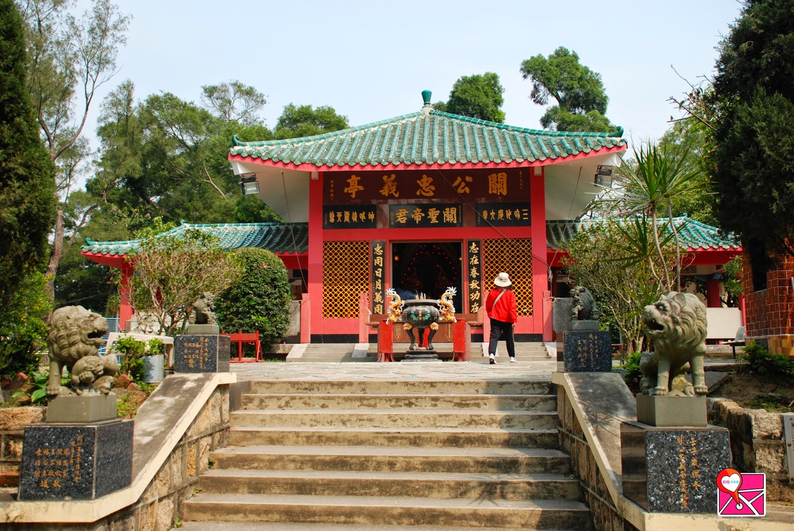

路線難度
初級
長洲關公忠義亭是一所關帝廟，位於長洲南部的山上。亭兩旁種植了數棵台灣山櫻花樹，每年大約三月上旬櫻花樹便會開花，而且吸引不少來賞花的人潮。
台灣山櫻
又稱為緋寒櫻
忠義亭內的
關帝廟

關公忠義亭
於中環5號碼頭乘坐渡輪前往長洲 (詳細船期可瀏覽
運輸署網站
)，上岸後往東灣路走，然後右轉至警署徑，向山坡方向步行約10分鐘便到達關公忠義亭。
櫻花的花期很短，而且每年開花的時間都不同，最佳觀賞季節為每年三月上旬至中旬。
近年賞花人數持續增加，請大家謹守秩序，切勿破壞櫻花樹的生長。廟內亦應保持清靜，切勿打擾他人。
打開地圖